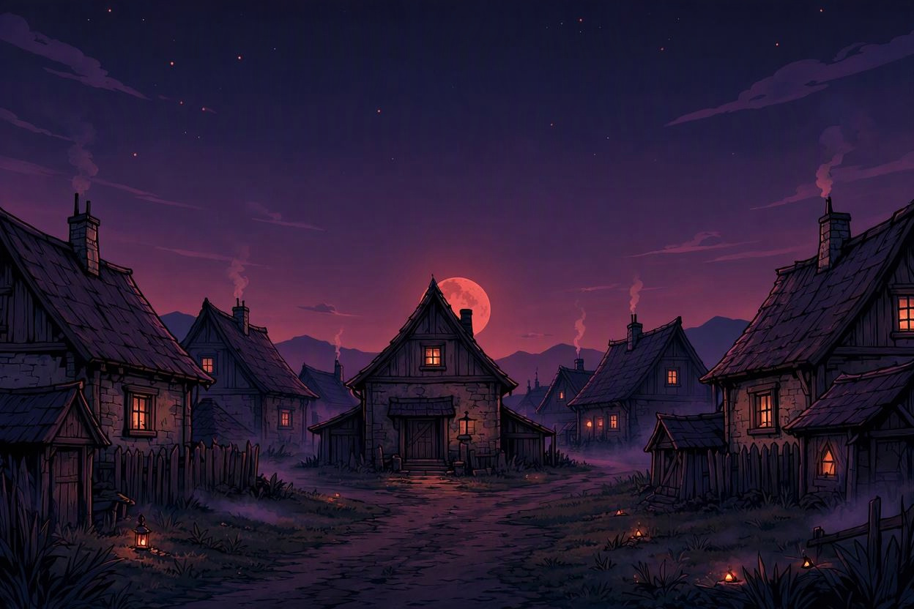

Chapter IV - Haven of the Damned

Beyond the mountains, you descend into a valley where a small village clings to life in the shadow of the Superlord's tyranny. The people here are survivors — hardened by decades of oppression, yet still clinging to fragments of hope.
You need supplies for the final leg of your journey. The Superlord's fortress lies just beyond the next ridge, and you cannot face him on an empty stomach or without proper equipment. But the villagers are wary of strangers, and the Superlord's spies are everywhere.
The village market bustles with quiet desperation. Merchants sell their wares under the watchful eyes of Superlord's guards — armored enforcers who patrol the streets, ensuring loyalty through fear.
You must find a way to equip yourself — but how far are you willing to go?
How do you get supplies?